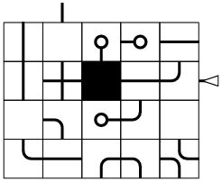
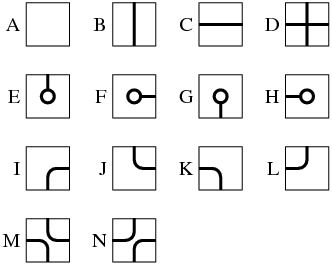
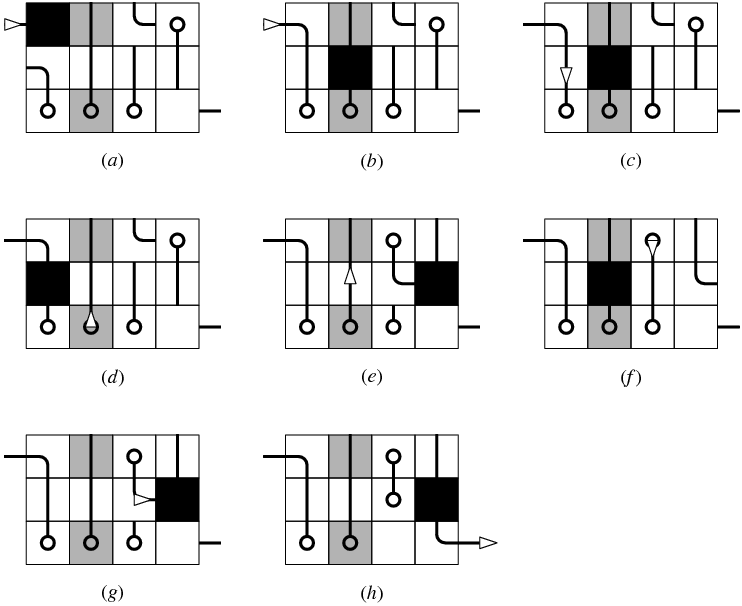

Time Limit: 5 sec
屋根裏を整理していると，子供の時によく遊んだおもちゃが見つかった． このおもちゃはチクチクバンバンという名前で， サボテンを載せた貨物列車をレールから脱線しないように 駅から駅まで運ぶというゲームだ． 近所の子と一緒に熱中した懐かしい思い出が蘇り， 掃除の途中であるのだが久しぶりに1回だけ遊ぶことにした．
このおもちゃの概観を図7に示す．
|  |
| 図7: チクチクバンバンの概観図． |
このおもちゃは，1枚のフレーム， W×H−1 枚のタイル，1台の列車でできている． フレームには横幅 W，縦幅 H の長方形の窪みが空いていて， その窪みと隣接するように駅が2つ描かれている． タイルは 1×1 の大きさで上面にレールが彫ってあり， フレームの窪みにはめるとちょうど 1×1 の大きさの隙間が残るようになっている． この隙間と上下左右に隣接するタイルをスライドさせ， タイルと隙間の位置を入れ替えることによって， タイルの配置を変更することができるようになっている．
ゲームスタート時には，片方の駅に列車が置かれている （図7では列車を三角の印で表現している）． ゲームスタートと同時に列車は駅を出発し， レールに沿って移動し続ける． タイルの上のレールの形に関わらず， 列車はあるタイルに入ってから出てくるまでにちょうど時間 1 を費やす． プレイヤーはタイルを適切なタイミングでスライドさせ， 列車を脱線させないようにしなくてはいけない． 脱線とは，レールが繋がっていない方向からタイルへ進入したり， タイルとタイルの隙間に落ちたり， 駅以外のフレームに乗り上げたりすることである． 列車がスタートした方とは異なる駅に到着することができたらゲームクリアである．
私はこのゲームをさんざんプレイしたことがあるため， タイルはいつでも好きな時に滑らかに， 列車の速度に対して無視できる時間で動かすことができる． また，列車が乗っているタイルを列車ごとスライドさせるという 高等テクニックも身につけている． そのため，慣れた手つきで格好良く軽々とクリアできるはずであった． ところが，長い間蒸し暑い屋根裏部屋に置いていたせいか， プラスチックが溶けてフレームとくっついてしまい， いくつかのタイルが動かなくなっていることがわかった． そのため，ゲームが非常に難しく，そしてより魅力的になってしまっていた． 何度もプレイした結果，タイルの配置によっては クリアできるかどうかすら簡単にわからないこともあるということがわかった．
ここであなたにお願いがある． ゲームの初期盤面を与えると， その盤面がクリア可能かどうかを判定し， クリア可能なら列車の最短移動時間を求めるプログラムを書いて欲しい． もしプログラムが完成したなら， きっと私はこのゲームから足を洗うことができ， 掃除の続きに戻ることができるだろうから．
入力は複数のデータセットからなり， 1行目にデータセット数が与えられる． 以降に，それぞれのデータセットが続く．
それぞれのデータセットは以下のようなフォーマットで与えられる．
ただし，記号の意味は以下の通りである：
#” で与えられる．
|  |
| 図8: タイルの種類． |
データセットごとに，
列車が駅間を移動するのに最低限必要となる時間を1行に1つ出力せよ．
もし駅間の移動が不可能なら “-1” を出力せよ．
2 4 3 1 2 3 0 #bJG KBBB EeEA 6 5 3 4 1 2 aaaIMM aaaIaA N#BJDA DaBaaa MNBaaa
6 -1
サンプル入力の最初のデータセットの解決法を以下に示す． 以下の説明において， t は列車がタイルに乗った瞬間からの時間を表す． 図9において， 列車は白い三角形の印で表し， 固着したタイルはグレーで表している．
|  |
| 図9: サンプル入力の最初のデータセットの解決法． |